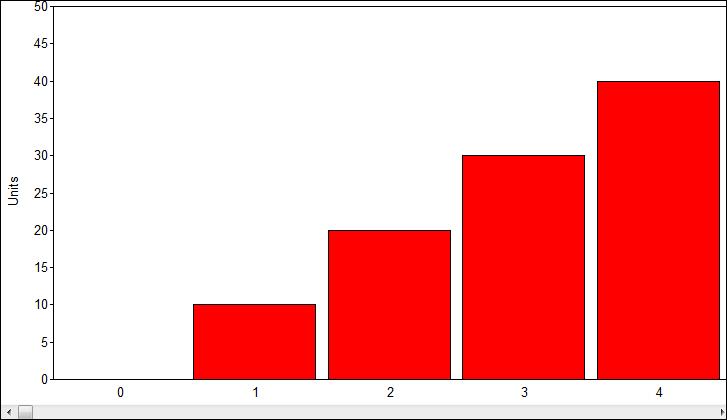

iTest User's Guide
The ADT Array Chart display object allows you to insert a chart object that will display all of the values of an array channel.
ADT Array Chart

ADT Array Chart Properties
| Option | Description |
| Channel Name | Array channel to display the values from. Click the Browse... button to open the Channel Selection dialog. |
| Label Channel Name | If an array label channel is set, the labels are drawn only when the chart is initialized, they are not updated dynamically while the display is up. |
| Orientation | Vertical or Horizontal. |
| Page Size | This is a scrolling multi-page object. The page size is the number of bars to put on each page. |
| Ranges | You can Add or Delete range values in this section, as well as set colors that are used for each. The color is changed by double-clicking the color box. Each range value represents a lower range. That is, values below that will appear in the color specified. |